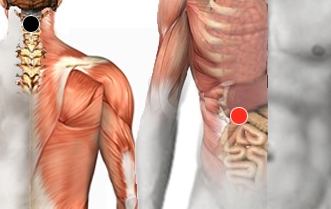

Plasmodium Falciparum
Par
cervical 1 (atlas) - píloro

Generalidades:
Puede invadir los Glóbulos Rojos. Se confunde con Paludismo.
Es uno de los parásitos más agresivos, causante de la Malaria. Presenta un complejo ciclo de vida que requiere de dos hospederos: uno vertebrado y otro invertebrado. Se transmite a través del mosquito Anopheles sp. Primero viaja al hígado donde se multiplica por unos 5 días para infectar el torrente sanguíneo, atacando a los eritrocitos, al mismo tiempo que continúa multiplicándose.
Es dificil su tratamiento ya que ha creado resistencia a la mayoría de los antibióticos.
Transmisión
Por el mosquito Anopheles sp.